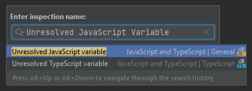

Eclipse Scout Migration Guide
About This Document
This document describes all relevant changes from Eclipse Scout 22.0 to Eclipse Scout 23.1. If existing code has to be migrated, instructions are provided here.
Obtaining the Latest Version
Scout Runtime for Java
Scout Runtime artifacts for Java are distributed using Maven Central:
Usage example in the parent POM of your Scout application:
<dependency>
<groupId>org.eclipse.scout.rt</groupId>
<artifactId>org.eclipse.scout.rt</artifactId>
<version>23.1.14</version>
<type>pom</type>
<scope>import</scope>
</dependency>Scout Runtime for JavaScript
Scout Runtime artifacts for JavaScript are distributed using npm:
Usage example in your package.json:
{
"name": "my-module",
"version": "1.0.0",
"devDependencies": {
"@eclipse-scout/cli": "23.1.14",
"@eclipse-scout/releng": "^22.0.0"
},
"dependencies": {
"@eclipse-scout/core": "23.1.14",
"jquery": "3.6.0"
}
}The pre-built Scout JavaScript assets are also available using a CDN (e.g. to be directly included in a html document): https://www.jsdelivr.com/package/npm/@eclipse-scout/core?path=dist
IDE Tooling (Scout SDK)
Scout officially supports IntelliJ IDEA and Eclipse for Scout Developers.
IntelliJ IDEA
You can download the Scout plugin for IntelliJ IDEA from the JetBrains Plugin Repository or you can use the plugins client built into IntelliJ IDEA. Please refer to the IntelliJ Help on how to install and manage plugins.
Eclipse
You can download the complete Eclipse IDE with Scout SDK included here:
Eclipse for Scout Developers
To install the Scout SDK into your existing Eclipse IDE, use this P2 update site:
https://download.eclipse.org/scout/releases
New 3rd Party requirements
Scout 23.1 requires at least Node 18.12.1. Older versions will not work. A new version can be obtained from the Node download page.
Scout now requires at least pnpm 7.16.0. You can install it as described on the pnpm installation page.
To update your application the following steps might be required:
-
Update the version of the
maven_rt_plugin_config-masterin yourpom.xmlfiles to the newest23.1.xrelease. See Maven central for a list of versions available. -
Update the Scout versions (
package.jsonandpom.xml) as shown in Obtaining the Latest Version. -
If you are using Eclipse and web-service providers, update the
.factorypathfiles as shown in JAX-WS Appendix. -
The support for the Maven build plugin
org.kuali.maven.plugins:properties-maven-pluginhas been replaced withorg.codehaus.mojo:properties-maven-plugin. Update the groupId accordingly. Please consult the plugin documentation for the old and the new plugin for instruction on how to migrate the plugin configuration. -
The dependency to
org.jboss:jandexhas been renamed toio.smallrye:jandexand the corresponding build plugin fromorg.jboss.jandex:jandex-maven-plugintoio.smallrye:jandex-maven-plugin. In case one of these artifacts is used in your code, update the groupId accordingly.
Update of other 3rd Party JavaScript libraries
Perform the following migration in all your package.json files:
-
If you specify the minimum engines versions, please update them as follows:
{ "engines": { "node": ">=18.12.1", "npm": ">=9.1.1", "pnpm": ">=7.16.0" } } -
Update the following dependencies (if existing in your application):
"jasmine-core": "4.5.0" "karma": "6.4.1" "eslint": "8.27.0" -
Remove the following dependencies:
"@babel/core" "@babel/eslint-parser" "@babel/eslint-plugin"
Replace the content of your .eslintrc.js with the following:
module.exports = {
extends: '@eclipse-scout'
};RegisterNamespace
In all your index.js files, replace the last line as follows:
window.yourNamespace = Object.assign(window.yourNamespace || {}, self);ObjectFactory.get().registerNamespace('yourNamespace', self);See the JsDoc of the registerNamespace method if you are curious what it does.
ObjectType as Class Reference (Scout JS)
As described in the Eclipse Scout Release Notes, it is now possible to use class references for the objectType.
Even though the string based style still works and a migration is not necessary, the class reference style is the preferred way for the future.
We highly recommend you migrate your code, so you can benefit of the improved type safety and code completion.
To do so, you can use the Scout migration tool, which migrates the strings and also tries to add the required imports automatically. Alternatively, you can do it by yourself using your IDE and Find/Replace.
To use the migration tool, follow the steps described here: @eclipse-scout/migrate
Alternative Way to Migrate ObjectType
If the above script somehow does not work for you, you can do the migration by yourself as follows:
-
Find and replace all occurrences of
scout.create(),objectType:,lookupCall:andlogicalGrid:(use Ctrl-Shift-R in IntelliJ and enable Regex).Find: scout.create\('(.*\.)?(.*)' Replace: scout.create\($2Find: objectType: '(.*\.)?(.*)' Replace: objectType: $2Find: lookupCall: '(.*\.)?(.*)' Replace: lookupCall: $2Find: logicalGrid: '(.*\.)?(.*)' Replace: logicalGrid: $2The regex considers objectTypes with and without namespace.
-
Add imports
Now we need to add the required imports. You can either manually add them, but with a lot of files it is a tedious task. Unfortunately, IntelliJ does not provide a possibility to automatically add all missing imports. But there is a trick: resolve multiple inspections at once using code analysis.-
Start the action
Run inspection by nameand select the inspectionUnresolved JavaScript variable.Figure 1. Start ActionFigure 2. Select inspection -
Select
Uncommitted filesand disable all inspection options, because the inspection is not limited to missing imports. Click OK to run the analysis. Figure 3. Run Action
Figure 3. Run Action -
In the result view, select one or more problems and click the button
Missing import statement.Note: Sometimes
Missing import statementis located in a drop down calledApply quick fixes to all the problems.Note: Even though we disabled all inspection options, there may still be problems other than
Missing import statement. If that is the case, resolving multiple problems is not possible unless you unselect these problems including theirs parent node. Figure 4. Resolve problems
Figure 4. Resolve problems Figure 5. Button in drop down
Figure 5. Button in drop down -
Finally, you need to verify, whether the imports are correct. Please make sure all imports are present for every object type and the classes are imported from a module and not a single file.
Listing 3. Good importimport {Button, GroupBox} from '@eclipse-scout/core';Listing 4. Bad importimport Button from '@eclipse-scout/core/src/form/fields/button/Button.js';
-
MenuTypes as Constants (Scout JS)
Since there are now constants for menu types, you can replace the string literals and use these constants.
The migration can be done automatically using the migration tool. If you already used it to migrate the object type (ObjectType as Class Reference (Scout JS)), the menu types have probably already been migrated. Otherwise, follow the instructions described here: @eclipse-scout/migrate
Scout JS API Changes
Along with the TypeScript migration, we had to adjust the API a little and removed some obsolete code. Please check if your JavaScript uses the mentioned methods and adjust it accordingly.
Rename WidgetTooltip.widget
The widget property of WidgetTooltip has been renamed to content.
Together with the property itself the corresponding setter has been renamed from setWidget to setContent.
Rename WidgetPopup.widget (Scout JS & Scout Classic)
The widget property on WidgetPopup classes (and all its subclasses) has been renamed to content:
-
Scout JS
-
Update the
widgetproperty in all JS models creating WidgetPopups fromwidgettocontent. -
Rename the
_renderWidgetmethod on subclasses ofWidgetPopupto_renderContent. -
setWidgeton WidgetPopups has been renamed tosetContent.
-
-
Scout Classic
-
IWidgetPopup#PROP_WIDGEThas been renamed toIWidgetPopup#PROP_CONTENT. -
IWidgetPopup#getWidgethas been renamed toIWidgetPopup#getContent. -
AbstractWidgetPopup#getConfiguredWidgetas been renamed toAbstractWidgetPopup#getConfiguredContent. -
AbstractWidgetPopup#createWidgetas been renamed toAbstractWidgetPopup#createContent. -
AbstractWidgetPopup#setWidgetas been renamed toAbstractWidgetPopup#setContent.
-
Rename ProposalChooser.model
The model property on ProposalChooser class (and all its subclasses) has been renamed to content:
-
Scout JS
-
Rename the
_createModelmethod on subclasses ofProposalChooserto_createContent. -
Rename the
_renderModelmethod on subclasses ofProposalChooserto_renderContent.
-
Options-parameter for filter-methods in menus.js
The methods filter and filterAccordingToSelection in menus.js now have an options-parameter. This parameter combines the former parameters onlyVisible, enableDisableKeyStrokes and notAllowedTypes.
The following are two migration examples:
let allowedTypes = ['Example.MenuType'],
onlyVisible = true,
enableDisableKeyStrokes = false;
// example 1
menus.filter(this.menus, allowedTypes, true, false);
// example 2
menus.filter(this.menus, allowedTypes, onlyVisible, enableDisableKeyStrokes);let allowedTypes = ['Example.MenuType'],
onlyVisible = true,
enableDisableKeyStrokes = false;
// example 1
menus.filter(this.menus, allowedTypes, {
onlyVisible: true,
enableDisableKeyStrokes: false
});
// example 2
menus.filter(this.menus, allowedTypes, {onlyVisible, enableDisableKeyStrokes});JQuery-Scout
The following functions have been removed because they are not in use anymore.
-
removeThis
-
suppressEventIfDisabled
-
colorOpacity
-
copyCssIfGreater
-
backupSelection
-
restoreSelection
-
onSingleOrDoubleClick
The following functions have been renamed
-
widthToContent → cssWidthToContentAnimated
Table
TableFilter.js has been removed because it has no benefits.
With TypeScript, the interface Filter<TableRow> should be used instead.
With JavaScript, extends from TableFilter can be removed.
Testing / karma-jasmine-scout
The following functions have been removed because they are not in use anymore.
-
createAdapterModel
-
stripCommentsFromJson
-
definedProperty
-
sameProperty
-
JQuery.triggerMouseMove
-
JQuery.triggerWithPosition
The following functions have been renamed.
-
widgetCloneProperty → toHaveClonedWidgetProperty
The jquery-plugin jqueryExtensions has been refactored to a ES6 module to avoid pollution (of code completion) of the JQuery object outside test environment. In the rare case you used these functions for testing, you need to import them now, the JQuery-object does not contain them anymore.
JS Build Improvements
Imports
Scout JS files cannot be imported directly anymore and need to be imported from the scout module. You are probably using the correct import style already, since file based import was bad practise anyway. In case there are file based imports, just adjust them as follows:
import Table from '@eclipse-scout/core/src/table/Table'import {Table} from '@eclipse-scout/core'The following modules are affected:
-
@eclipse-scout/core/src → @eclipse-scout/core
-
@eclipse-scout/core/src/testing → @eclipse-scout/core/testing
This applies only to imports of js files. Imports to less files should stay untouched (for now).
|
IId types, IdFactory and IdExternalFormatter
Up to release 2022 the support for typed identifiers (IId) was limited to root ids wrapping one specific Java identifier. The support was extended to include composite ids wrapping multiple java identifiers. As part of this new feature a refactoring of the existing id classes was done which may require some migration steps:
-
IIdwas typed with a generic parameter<WRAPPED_TYPE>which was removed and moved toAbstractRootId. If you need this generic parameter, change your code to useAbstractRootIdinstead ofIIdor consider removing the generic parameter at interface-level in your code as well. -
IIdup to release 2022 were limited to wrap a single value. If your code rely on a single wrapped value, replaceIIdbyIRootIdandAbstractIdbyAbstractRootId. If you don’t change your code type and useIIdyou implicitly add support for composite types in your APIs. -
Some factory methods for building ids and serialization where moved between classes and/or renamed (the serialized string representation is identical):
-
IdExternalFormatter.getTypeName()→IdInventory.getTypeName() -
IdExternalFormatter.getIdClass()→IdInventory.getIdClass() -
IdExternalFormatter.toExternalForm()→IdCodec.toQualified() -
IdExternalFormatter.fromExternalForm()→IdCodec.fromQualified() -
IdExternalFormatter.fromExternalFormLenient()→IdCodec.fromQualifiedLenient() -
IId.unwrapAsString()→IdCodec.toUnqualified()(Note: Unwrap as string is still available forIRootIdbut according to the javadoc should only be used for logging and debugging purpose) -
IdFactory.createFromString()→IdCodec.fromUnqualified()
-
-
Completeness test for ids was improved. Use
AbstractIdStructureTestas base for id completeness tests in own maven modules.-
Implementations of
AbstractStringIdare required to create a null-id instance if invoked with an empty string (e.g. useif (StringUtility.isNullOrEmpty(id)) { return null; }in your staticof()method, seeFixtureStringIdas example) -
The former base classes
AbstractUuIdStructureTestandAbstractStringIdStructureTestwere integrated and removed
-
Renaming of DoStructureMigration to DataObjectMigration
Because the DoStructureMigrator executes value migrations too (IDoValueMigrationHandler), several renamings were applied.
Classes:
-
DoStructureMigrationContext → DataObjectMigrationContext
-
DoStructureMigrationCountingPassThroughLogger → DataObjectMigrationCountingPassThroughLogger
-
DoStructureMigrationInventory → DataObjectMigrationInventory
-
DoStructureMigrationPassThroughLogger → DataObjectMigrationPassThroughLogger
-
DoStructureMigrationStatsContextData → DataObjectMigrationStatsContextData
-
DoStructureMigrator → DataObjectMigrator
-
IDoStructureMigrationGlobalContextData → IDataObjectMigrationGlobalContextData
-
IDoStructureMigrationLocalContextData → IDataObjectMigrationLocalContextData
-
IDoStructureMigrationLogger → IDataObjectMigrationLogger
Test classes:
-
TestDoStructureMigrationInventory → TestDataObjectMigrationInventory
-
TestDoStructureMigrator → TestDataObjectMigrator
Methods:
-
DataObjectMigrationInventory#getMigrationHandlers → #getStructureMigrationHandlers
-
DataObjectMigrationInventory#getDoMigrationContextValues → #getDoStructureMigrationTargetContextDatas
Removals (see deprecation warning in 22.0 for further information):
-
DoStructureMigrator#migrateDataObject(DataObjectMigrationContext, IDataObject)
-
DoStructureMigrator#migrateDataObject(DataObjectMigrationContext, IDataObject, IDataObjectMigrationLocalContextData…)
-
DoStructureMigrator#migrateDataObject(DataObjectMigrationContext, IDataObject, NamespaceVersion, IDataObjectMigrationLocalContextData…)
-
TestDoStructureMigrationInventory#TestDoStructureMigrationInventory(List<INamespace>, Collection<ITypeVersion>, Collection<Class<? extends IDoStructureMigrationTargetContextData>>, IDoStructureMigrationHandler…)
Scout REST Client: Removed property scout.rest.useScoutApacheConnector
The property scout.rest.useScoutApacheConnector was removed in release 23.1.
The ScoutApacheConnector implementation is the new default handler to connect the Apache HTTP client for Jersey REST calls.
Remove config property scout.rest.useScoutApacheConnector=… from all your config files.